地政学
香港は中国の特別行政区であり、南シナ海、珠江デルタ、国際金融市場をつなぐ境界都市である。法制度、通関、移動、言語、報道の扱いが、港の自由度と国家統治の緊張を日常に近づける都市である。海空路も要所である。
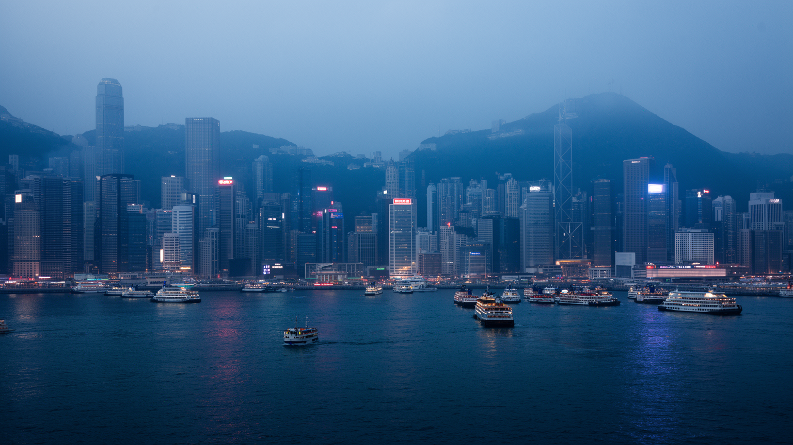
🇭🇰 中国香港特別行政区 / アジア / World City Atlas
珠江デルタの入口で、金融、港湾、法制度、移民、映画、宗教、抗議の記憶、超高密度の住宅生活が重なる海峡都市。
都市の骨格
香港は狭い平地と深い港を使い切り、金融街、住宅団地、寺院、市場、フェリー、空港、中国本土への回路を高密度に重ねている。
香港は中国の特別行政区であり、南シナ海、珠江デルタ、国際金融市場をつなぐ境界都市である。法制度、通関、移動、言語、報道の扱いが、港の自由度と国家統治の緊張を日常に近づける都市である。海空路も要所である。
金融、港湾、保険、法律、物流、観光、飲食、介護、家事労働が高密度に結びつく。専門職の高収入と、長時間のサービス労働、移住労働者の住み込み勤務が同じ都市を支える現実がある街。休日の広場も労働地図になる。
広東語映画、ポップ音楽、新聞、飲茶、道教寺院、仏教、キリスト教、祖先祭祀、移民の祈りが重なる。植民地期と中国都市の記憶が混じり、言語と信仰が街の個性を守る日常の核である。祈りも公共空間を作る。今も。
高層住宅、狭い部屋、地下鉄、ミニバス、市場、離島、夜景、山道が生活と観光を近づける。便利さの裏には住宅費、暑熱、高齢化、政治的不安、働く時間の長さもある現実の街である。旅の視線も生活に触れる。今も。
香港の都市構造は、ビクトリア・ハーバーと急な丘陵地を抜きに理解できない。平地が少ないため、金融街、埠頭、住宅、学校、市場、寺院、道路、鉄道は狭い帯状の土地に押し込まれ、背後の山は都市の境界であると同時に避難先や余暇の場所にもなる。港は植民地期から東アジア貿易の入口であり、コンテナ化と空港移転を経ても、都市の視線と経済の中心であり続けた。中環、湾仔、尖沙咀、油麻地、葵青、ランタオ島は、観光写真の夜景だけでなく、フェリー、トンネル、橋、倉庫、税関、オフィス、ホテル、住宅の機能で結ばれる。海を挟んだ近さは香港らしい開放感を生む一方、埋立と再開発は水辺の公共性をめぐる争点にもなる。山側の斜面住宅や新界のニュータウンへ目を向けると、都市は港の輝きだけでなく、限られた土地をどう分け合うかという厳しい問いとして現れる。豪雨時の斜面崩壊、高潮、台風、地下空間の浸水は地形と気候の記憶を呼び戻す。香港を歩くことは、港を眺めるだけではなく、坂、階段、歩道橋、フェリー桟橋、地下鉄駅を通じて、立体的に詰め込まれた都市の生活条件を読むことでもある。さらに港を横切る短い移動は、九龍と香港島、新界と離島の生活差を意識させる。数分の船旅や一駅の移動で、家賃、方言、年齢層、観光客の密度が変わるため、地形は社会の違いを細かく区切る線にもなっている。
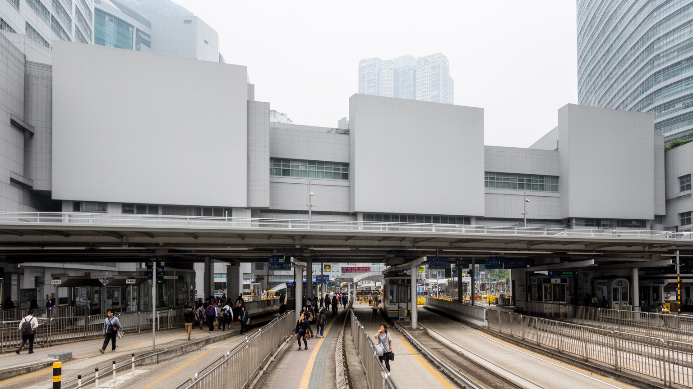
香港の地政学は、港の位置だけでなく制度の位置から始まる。中国の一部でありながら、長く独自の法制度、通貨、税関、出入境管理、金融規制、教育制度、報道文化を持ち、国際企業や投資家はその予測可能性を重視してきた。返還後の一国二制度は、香港を中国本土と世界市場の間に置く仕組みだったが、政治参加、治安法制、選挙制度、言論空間をめぐる変化は、住民の信頼や都市の国際的な評価に直接関わる。深圳との境界は日々の通勤、買い物、物流、家族移動を広げる一方、制度の違いを実感させる場所でもある。パスポート、ビザ、裁判所、大学、新聞、警察、銀行、証券取引所は抽象的な制度ではなく、都市生活の中で機能する装置である。抗議活動の記憶は、広場、歩道橋、大学、地下鉄駅、裁判所周辺に残り、街の普通の移動にも政治的な意味を帯びさせる。香港を理解するには、国家と市場の大きな物語だけでなく、市民がどの言葉でニュースを読み、どの制度に将来を預け、どの境界を越えて働くのかを見る必要がある。制度の変化は金融だけでなく、教育、移住、家族計画、文化制作、観光の空気まで動かす。企業の登記、学校選び、海外留学、家族の移住相談は、政治制度の変化を家庭の会話へ引き寄せる。都市の境界は地図の線ではなく、信頼、権利、将来設計を測る日常の尺度になっている。
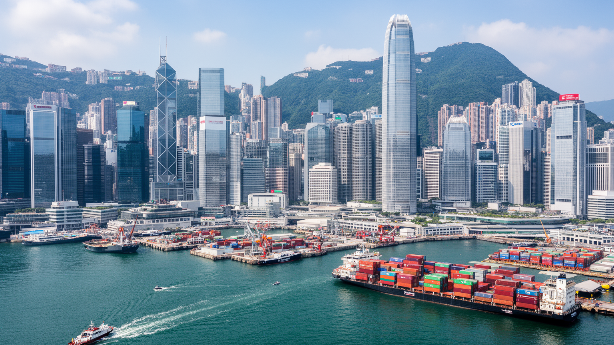
香港の経済は、製造業都市というより、資本、物流、法律、保険、会計、海運、観光、専門サービスを束ねる仲介都市として発展した。中環の高層ビルには銀行、証券、資産運用、法律事務所、会計事務所が集まり、港湾と空港は中国本土、東南アジア、欧米市場をつなぐ。香港ドルの制度、英米法に近い商事実務、低い税率、英語と広東語と普通話を使い分ける人材は、都市の競争力を支えてきた。だが金融の輝きは、家賃、所得格差、若者の就職、零細商店の退出をめぐる緊張も強める。株式上場や不動産投資で大きな利益が動く一方、飲食、清掃、警備、配送、ホテル、介護、家事労働の賃金は生活費に追いつきにくい。港湾機能も完全に消えたわけではなく、葵青のコンテナターミナル、空港貨物、越境トラック、倉庫、船舶管理は都市の背骨である。香港経済を読む時は、金融センターの国際性と、地元の労働者が家賃と時間に押される現実を同時に見る必要がある。仲介の都市は流れが速いほど強いが、政治的信頼や人材の流出が揺らぐと、その強みも静かに試される。家族経営の店、ホテルの裏方、会計士の長時間勤務、港のシフト作業は、同じ成長を別々の身体感覚で受け止める。数字の大きさより、誰が都市に残れるかが経済の持続性を決める。域内の信用と人材の循環が細れば、港の役割も弱まりうる。
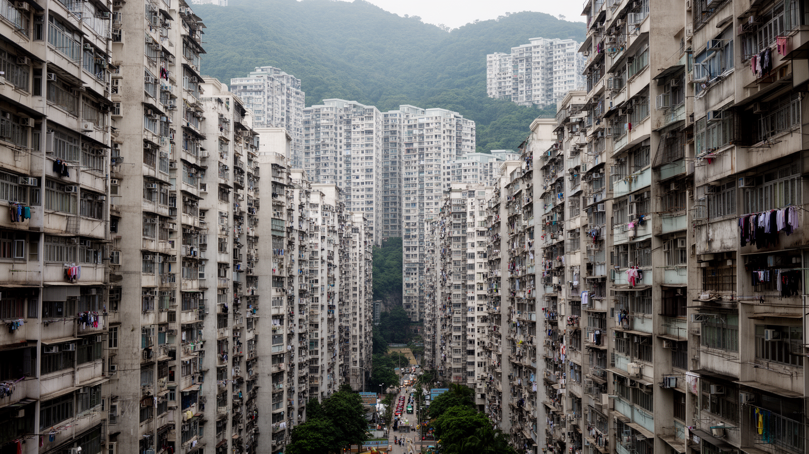
香港の暮らしを最も強く規定するのは住宅である。海と山に挟まれた土地、政府の土地制度、不動産投資、人口集中が重なり、住宅価格と家賃は世界でも高い水準にある。高層マンションや公営住宅団地は都市の象徴だが、その内部には広さ、眺望、駅距離、管理状態、所得、家族構成による大きな差がある。狭小住宅、劏房と呼ばれる細分化された部屋、古いビルの安全、待機期間の長い公営住宅は、豊かな金融都市の足元にある深刻な生活問題である。若者は独立や結婚を先送りし、高齢者は階段や暑さ、医療への距離に苦しみ、移住労働者は雇用主宅での住み込み生活によって私的な空間を持ちにくい。再開発は耐震性や衛生を改善する一方、古い市場や安い店、長く住んだ人を押し出す。香港の高密度は公共交通や商業の便利さを生むが、住居の狭さは在宅勤務、勉強、介護、休息の質を下げる。夜景の高層ビル群を美しい景観として眺めるだけでは、そこに暮らす人の圧迫は見えない。住宅を読むことは、香港の階層、家族、健康、移民、未来への希望を読むことに直結している。子どもの学習机、祖父母の介護ベッド、休日に一人になれる場所が確保できるかは、統計より具体的な生活の問題である。住宅政策は都市の道徳を映す鏡でもある。住まいの狭さは、夢や家族の距離感まで変えてしまう重い課題だ。
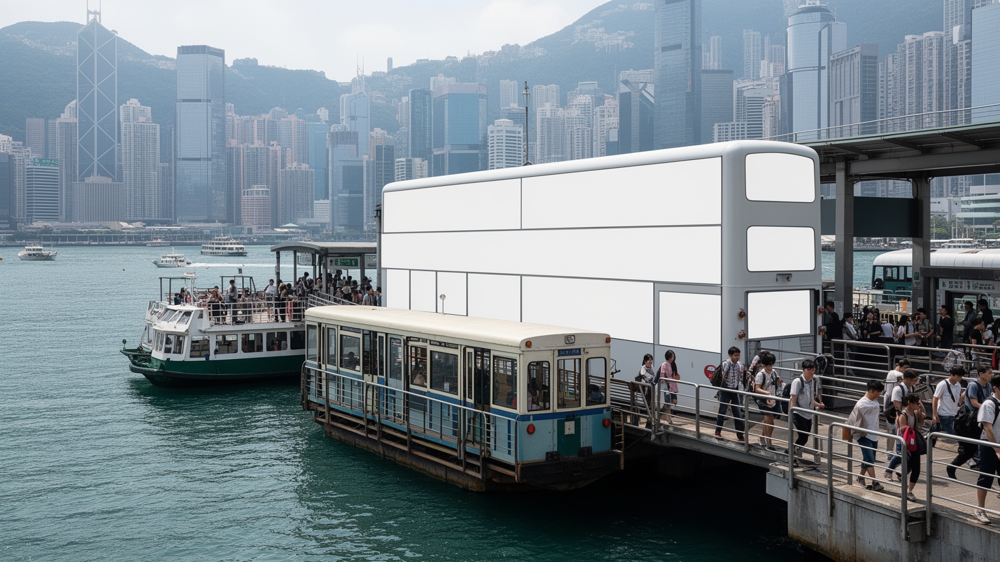
香港の移動は、MTR、二階建てバス、ミニバス、トラム、フェリー、タクシー、歩道橋、エスカレーター、空港鉄道、越境鉄道が細かく組み合わさっている。狭い土地に人と仕事が集中するため、交通の効率は生活の質そのものである。MTRは通勤、通学、買い物、観光を支える骨格で、駅の周辺には住宅、商業施設、学校、オフィスが高密度に配置される。フェリーは港の景観を体験させる交通であると同時に、離島の住民にとって日常の足でもある。中環の長いエスカレーターや斜面の階段は、坂の都市で移動を立体化する仕組みであり、雨や暑さの中で歩く負担を変える。深圳や広州へ向かう高速鉄道、橋、口岸は、香港を大湾区の一部として結び直すが、越境移動には制度、通関、言語、通貨、データの境界が残る。交通は便利さだけでなく、抗議活動や感染症対策の時には政治的な意味も持った。駅の封鎖、改札、監視カメラ、混雑、終電は、都市の自由度を測る感覚にもなる。香港の交通を読むことは、港湾都市の開放性と、境界管理の緊張が同じ車両や桟橋に重なる様子を見ることである。高齢者や障害者、子ども連れにとっては、階段の多さや乗換距離が都市の使いやすさを左右する。深夜勤務者や離島住民の移動を見れば、便利な交通網にも時間帯と場所による偏りがあることが分かる。駅の近さも階層を映す。
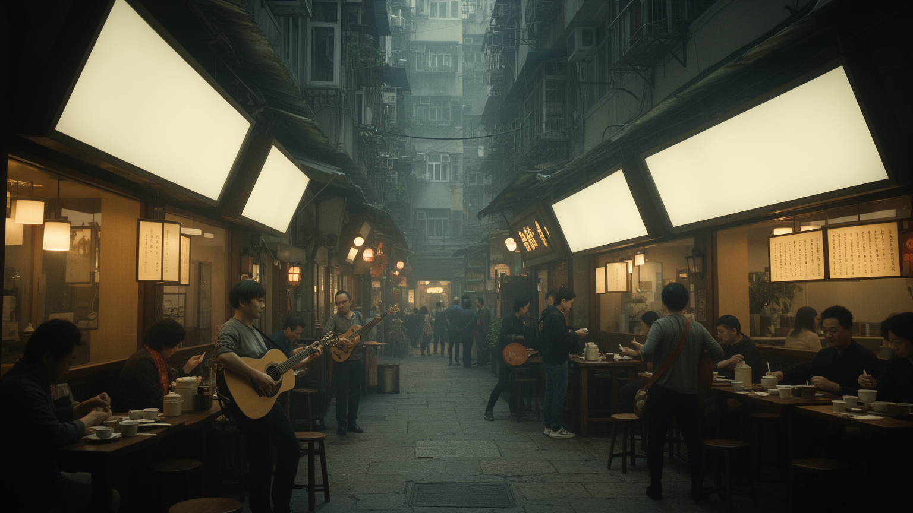
香港文化の中心には、広東語の響き、映画、ポップ音楽、新聞、漫画、テレビ、茶餐廳、街市、看板、冗談の速さがある。ブルース・リー、香港ノワール、コメディ、恋愛映画、カントポップは、アジアの都市文化に大きな影響を与え、狭い路地、階段、屋上、フェリー、ネオンの記憶を世界へ広げた。英語はビジネスと教育の重要な言語であり、普通話は中国本土との関係を深めるが、広東語は家庭、街角、政治的感情、地域のユーモアを支える。言語の選択は単なる便利さではなく、どの歴史を自分のものとして語るかに関わる。書店、映画館、独立音楽、小劇場、大学、オンライン文化は、制度変化の中で表現の幅を慎重に測りながら続いている。観光客にとって香港文化は飲茶や夜景として入りやすいが、住民にとっては移民家族の記憶、教育競争、報道の自由、地元商店の消滅、世代間の価値観の違いとも結びつく。文化は華やかな消費ではなく、都市が自分自身をどう名乗るかの基盤である。香港を読むには、映画の名場面だけでなく、日常会話、新聞の見出し、店の注文の仕方に残る感覚を大切にする必要がある。看板の字体、ラジオの声、学校で使う言語、葬儀の挨拶、家族の冗談は、制度が変わっても残る都市の感触である。文化の継承は博物館だけでなく、毎日の話し方の中で続く。失われる店も記憶を変える。
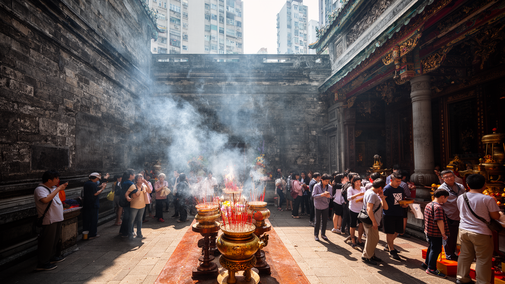
香港の宗教生活は、道教、仏教、祖先祭祀、民間信仰、キリスト教、イスラム教、ヒンドゥー教、シク教が港湾都市らしく重なっている。黄大仙祠や文武廟、天后廟は観光名所である前に、試験、商売、航海、健康、家族の安全を祈る場所であり、線香、供物、占い、祭礼が都市の時間を区切る。海の神である天后への信仰は、漁村と港の記憶を今に残し、高層ビルの足元に小さな祠が残ることで、都市の急速な更新に別の層を与える。キリスト教会や学校、病院、福祉団体は植民地期から社会サービスにも関わり、南アジア系や東南アジア系の住民はモスクや寺院、休日の集まりを通じて共同体を保つ。清明節や中元節の墓参、祖先への供え物、旧正月の祈願は、忙しい金融都市にも家族と死者の時間を持ち込む。宗教は政治や市場から離れた静かな領域に見えるが、教育、福祉、移民支援、家族観、地域の結束に深く関わる。香港の祈りを読むことは、多民族の港で人びとが不確かな将来にどう意味を与え、どの場所に安心を求めてきたかを読むことである。休日の公園や歩道橋に集まる移住労働者の祈りと交流も、都市の宗教地図を広げている。儀礼は家族の内側だけでなく、公共空間で居場所を確かめる行為でもある。線香の煙や供物の色は、速度の速い街にゆっくりした暦を差し込み、住民の不安を言葉にする場を保っている。
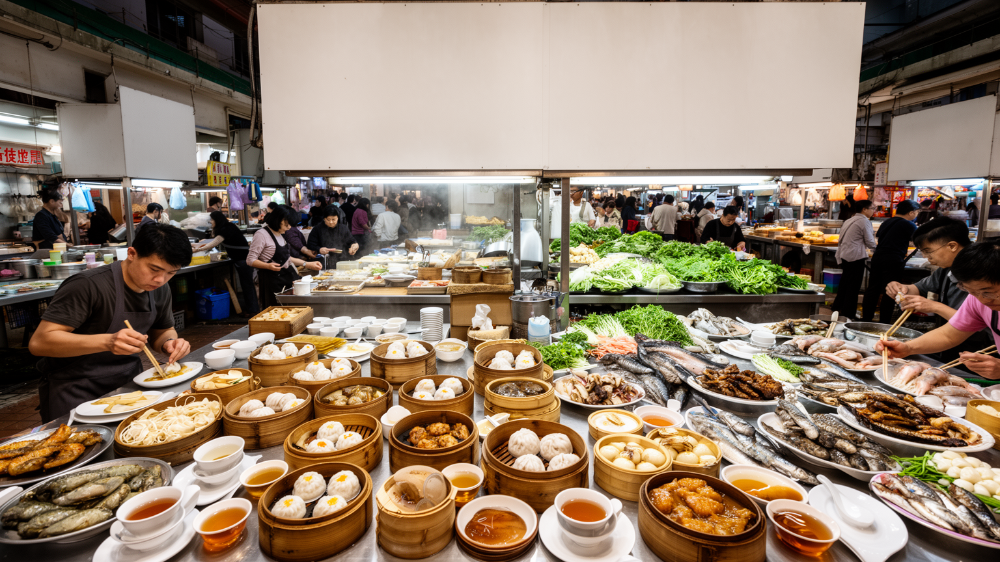
香港の食は、広東料理の洗練と労働都市の速さを同時に持つ。飲茶の点心、焼味、粥、麺、海鮮、茶餐廳のミルクティーや菠蘿包、屋台風の小食、街市の鮮魚や野菜は、観光の楽しみである前に住民の生活リズムを支える。朝の茶楼では高齢者が新聞を読み、昼には会社員が短い休憩で麺をすすり、夜には家族や友人が円卓を囲む。食文化は移民の歴史も映し、上海、潮州、客家、東南アジア、南アジア、西洋料理が街区ごとに重なる。だが厨房、配膳、皿洗い、仕入れ、清掃、配達は長時間で賃金も高くないことが多く、家賃の上昇は古い茶餐廳や市場の存続を難しくする。衛生的な商業施設への移転は便利さを増す一方、路地の匂い、店主との会話、地域の価格感覚を薄めることもある。食を読むことは、味の豊かさだけでなく、誰が早朝に仕込み、誰が深夜に片付け、どの家族が外食に頼り、どの店が再開発で消えるのかを見ることである。香港の食卓には、港の交易、家族の記憶、忙しい労働、都市更新の圧力が凝縮されている。狭い台所を補う外食文化は、家族の時間を外へ開く一方、店の価格や混雑に生活が左右される弱さも持つ。食堂の椅子は、都市の居間として働いている。相席の卓、早い注文、湯気の立つ厨房は、匿名の大都市に短い共同性を生む。食の速度は、働く都市の呼吸でもある。記憶も残る。
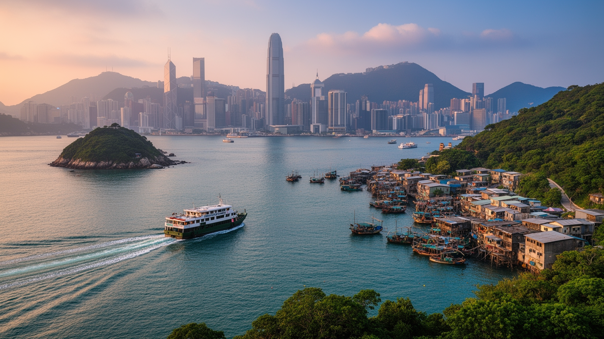
香港観光は、ビクトリア・ピークからの夜景、尖沙咀の水辺、中環の高層街、女人街、寺院、飲茶、映画の記憶だけで終わらない。ランタオ島、長洲、南丫島、坪洲、新界の村落、山道、海岸を歩くと、金融都市とは違う香港が見える。離島ではフェリーの時間が生活を決め、漁村、廟、海鮮店、ハイキング客、週末の家族連れがゆるやかに混じる。観光の成功は、交通の便利さ、多言語案内、治安、清潔さ、食の多様性に支えられるが、混雑、民泊、家賃、土産物化、自然環境への負荷も生む。都市中心部では、ネオン看板の減少や古いビルの再開発により、観光客が期待する香港らしさと、住民が必要とする安全や更新が必ずしも一致しない。博物館や歴史散策は、植民地、戦争、移民、抗議、工業化の記憶を伝える入口になる。香港を訪れることは、写真に収まる夜景を消費するだけでなく、同じフェリーや市場を使う住民の生活を尊重することでもある。観光都市としての魅力は、都市の複雑さを薄めるのではなく、港、山、島、路地、制度の重なりを丁寧に見せられるかで決まる。短い滞在でも、朝の市場、昼の寺院、夕方の山道、夜の水辺をつなぐと、観光と日常が分かれていないことが分かる。旅の動線は、住民の通勤や買い物の線と重なっている。だから観光の質は、訪問者の便利さと住民の静けさを両立できるかで決まる。
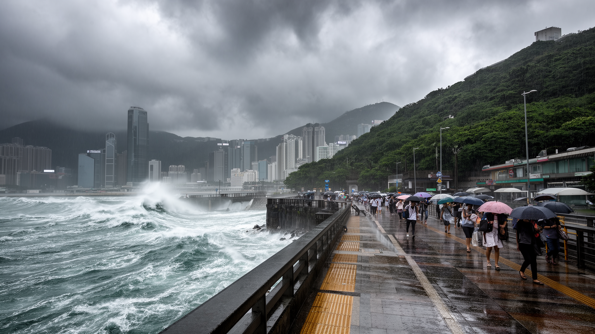
香港は亜熱帯の高温多湿な都市で、台風、豪雨、高潮、土砂災害、猛暑、感染症のリスクを抱える。海に近く斜面が多い地形は美しい景観を生むが、強い雨が降れば斜面、地下道、低地、埋立地、港湾施設が同時に試される。過去の土砂災害を経て斜面管理や排水設備は発達したが、気候変動による極端な雨と海面上昇は、従来の設計を超える可能性を高めている。高層住宅では台風時の窓、停電、エレベーター、給水、避難情報が生活の安全に直結する。猛暑は屋外労働者、清掃員、警備員、配達員、高齢者、狭い住居で暮らす人に重くのしかかり、冷房費や公共空間の不足は健康格差を広げる。地下鉄や商業施設は涼しい避難空間にもなるが、消費を前提にした場所へ入りにくい人もいる。香港の環境政策は、港湾の排出、建物の省エネ、緑地、海岸整備、廃棄物、公共交通を一体で考える必要がある。気候リスクを読むことは、都市の強さをインフラだけでなく、弱い立場の人が危険な日にどこへ逃げ、誰から情報を受け取れるかで測ることである。警報が出る日には学校、港、空港、建設現場、飲食店の判断が一斉に変わり、都市の経済と家族の予定が揺れる。防災は特別な技術ではなく、日々の労働条件と近隣関係を含む生活の制度である。涼める公共空間や多言語の警報は、命を守る都市の基本である。今も。
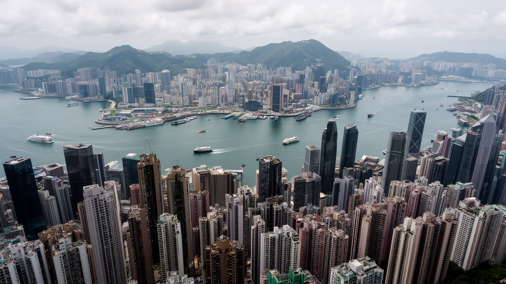
香港は、自由港、金融センター、映画都市、移民都市、特別行政区、高密度の住宅都市という複数の顔を同じ地図に重ねている。中環の銀行、湾仔の展示場、尖沙咀のホテル、旺角の市場、葵青のコンテナ港、新界のニュータウン、離島のフェリー、大学の講義室、寺院の線香、家事労働者が集まる休日の広場は、別々の都市ではなく一つの生活圏の層である。香港を経済だけで見ると、金融と物流の強さは分かっても、住宅の狭さ、言語の感情、政治的な不安、信仰、食、移民労働、気候リスクを見落とす。逆に政治だけで見ると、毎日の通勤、家族の食卓、山道を歩く余暇、商店の粘り強さが見えなくなる。重要なのは、制度の変化が市場や学校や移住判断に影響し、土地の狭さが家族形成や高齢者の生活に影響し、港の開放性が文化と宗教の多様性を育ててきたという連鎖を読むことだ。香港の魅力は、短い距離に世界規模の資本と日常の親密さが詰まる点にある。その密度は活力でもあり、疲労でもある。港を渡る風景、路地の食堂、斜面の住宅、境界の手続きまで合わせて見ると、香港は現代アジアの希望と緊張を凝縮した都市として立ち上がる。都市の未来は、国際金融の地位を保てるかだけでなく、若者が住み続けられるか、移民労働者が尊厳を持てるか、文化の言葉が日常に残るかにもかかっている。香港を読む視点は、強さと不安を切り離さないことから始まる。